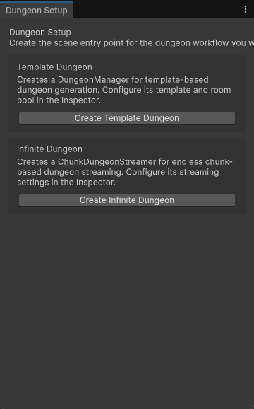
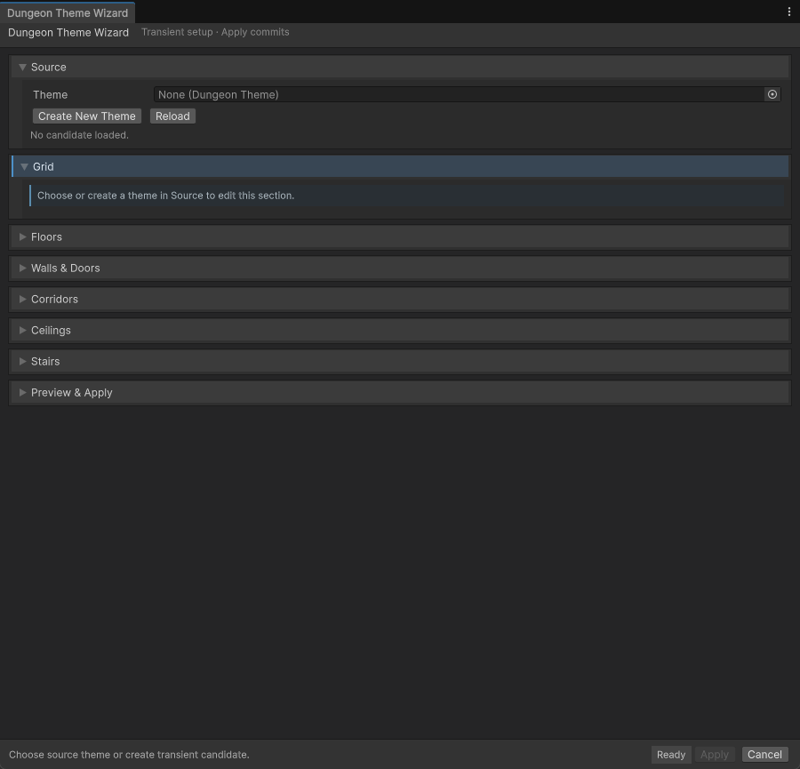
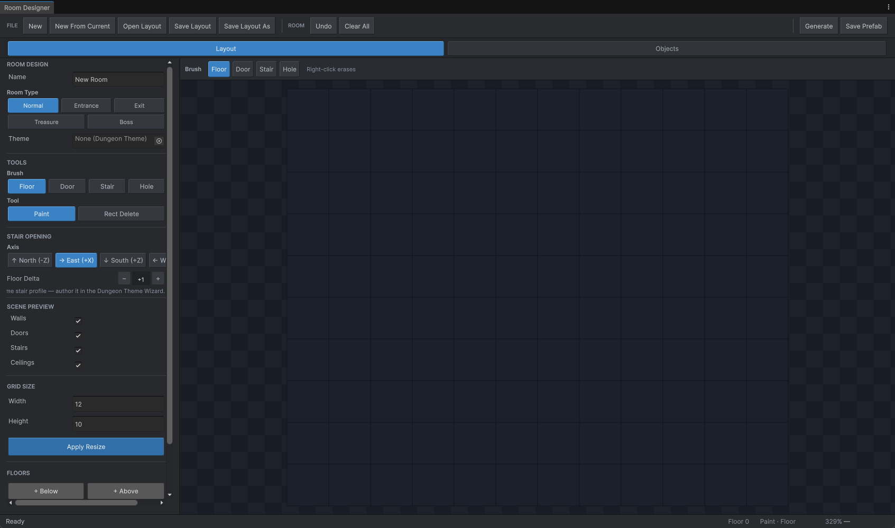
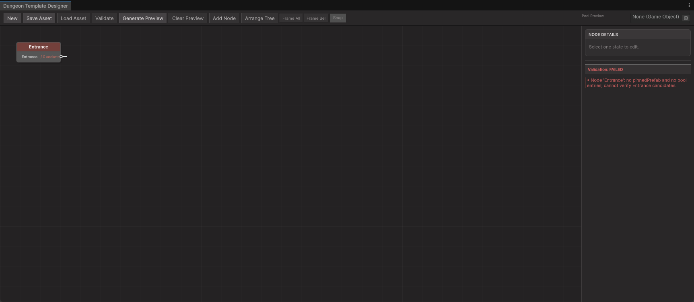
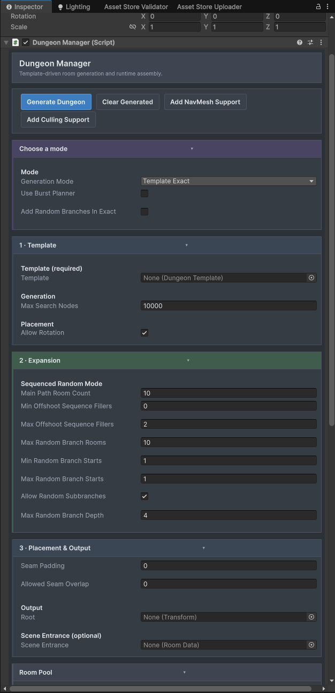
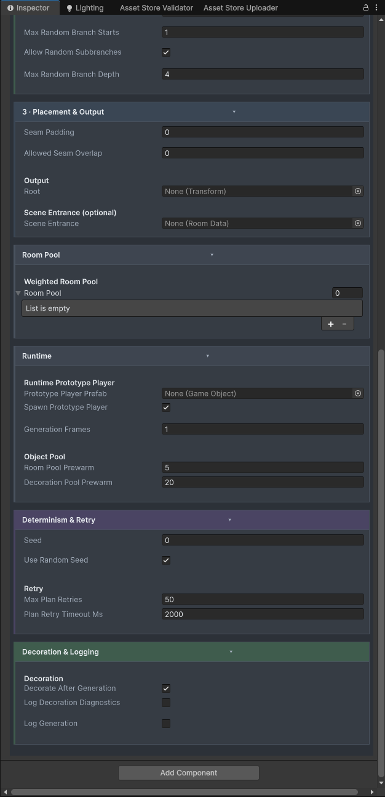
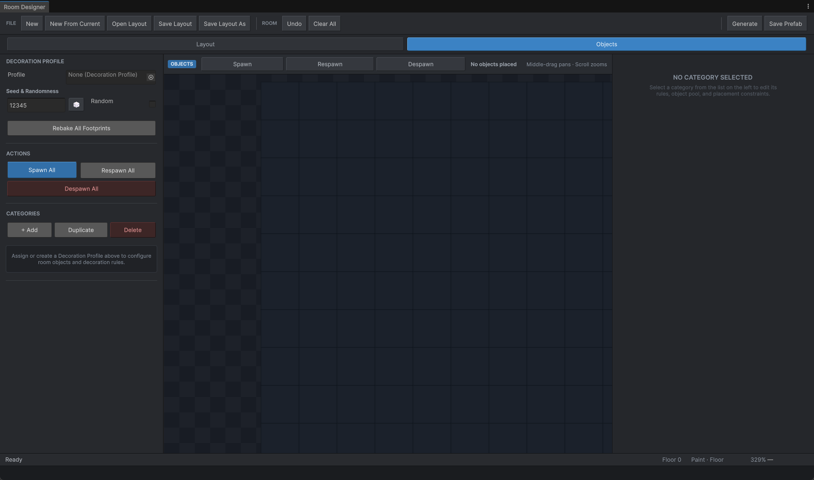
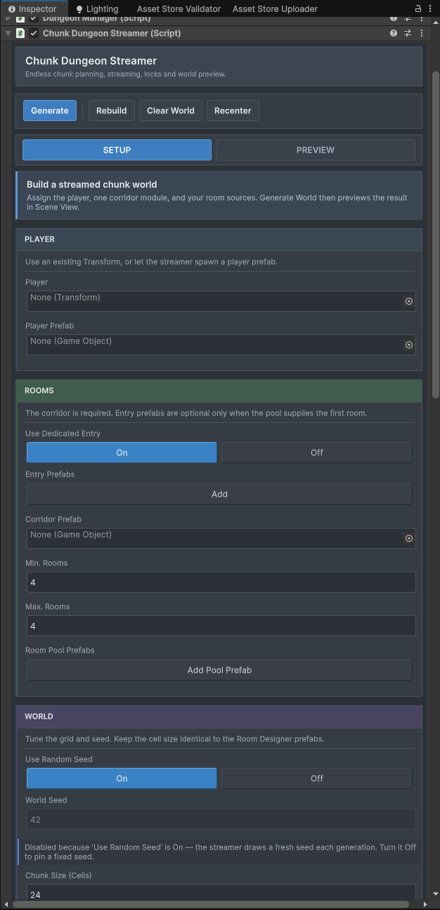
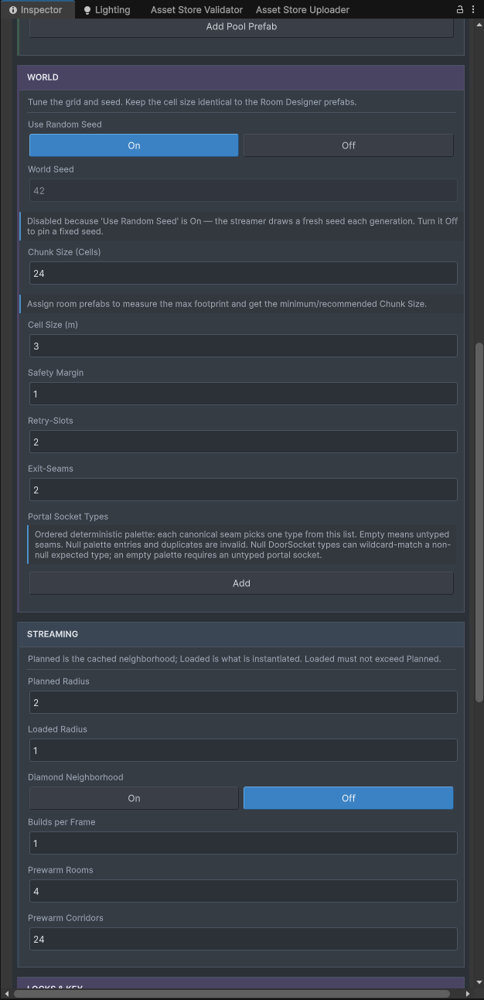
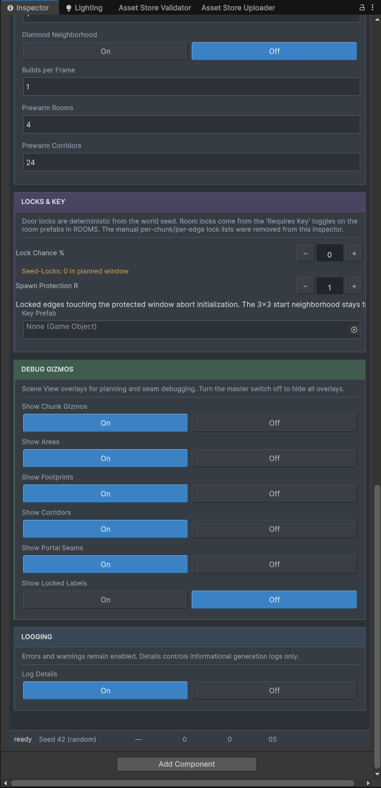

1. Package & setup
This is an Assets-folder toolkit, not a UPM package. Keep it at exactly Assets/DungeonGenerator/ — several editor windows load their .uss stylesheets from that path, and renaming or moving the folder breaks them.
Before using the tools, install the package dependencies: AI Navigation, Burst, Collections, Mathematics, and Alchemy (the exact versions used in development are listed in the shipped User Guide). Burst, Collections, and Mathematics are compile-time dependencies even when DungeonManager.useBurstPlanner is disabled.
Create a setup object
Open Tools ▸ DungeonGen ▸ Dungeon Setup to create a basic DungeonManager or ChunkDungeonStreamer setup object. You can also add DungeonManager directly to a scene GameObject.

Create authoring assets
Use the Project window's create menu: Assets ▸ Create ▸ DungeonGen ▸ … for Room Design, Dungeon Template, DungeonTheme, Decoration Profile, Door Socket Type, and Progression Requirement. Keep all authored assets in your own content folder (for example Assets/MyDungeonContent/) — never back inside the package folder.
2. Create a theme
- Create a
DungeonThemeasset in your content folder. - Add floor, wall, corner, door, ceiling, stair, hole, and corridor prefabs as needed.
- Set the tile size and floor height to match your kit.
- Open Tools ▸ DungeonGen ▸ Dungeon Theme Wizard.
- Use Detect Tile Size From Floors, then Analyze All.
- Review the proposed sizes and offsets, apply only the proposals that match your kit, and use the preview to verify seams.

A theme can omit a prefab family. For example, if no ceiling prefabs are assigned, the renderer does not create ceilings. Wall and door offsets that look small can create visible seams, so validate changes in the Theme Wizard preview.
3. Paint a room
Open Tools ▸ DungeonGen ▸ Room Designer. In Layout mode: the Floor brush paints walkable cells, the Door brush places a door overlay on a wall cell, the Stair brush anchors stairs between adjacent floors, and the Hole brush places an explicit opening. RectDelete removes a rectangular region. Right-click erases, middle mouse pans, the wheel zooms, F/D/S/H select common brushes, 0 fits the design to view, and R cycles the stair axis.

Doors are overlays; walls are derived from neighboring walkable cells. Do not paint wall cells manually to replace the derived wall system.
Multi-floor rooms
Use the floor controls to switch floors and paint each floor independently; stairs define the connection between floors. The renderer derives the floor opening, wall exclusions, and ceiling cutout from the stair footprint — do not add a second manual hole for the same stair opening.
Doors and socket types
Door direction is detected from neighboring wall geometry. A DoorSocketType controls compatibility between connections: a socket with no type is a wildcard, typed sockets normally require the same type asset, and compatible type relations can explicitly allow two different types to connect. Chunk portal selection also uses socket-type compatibility. Create types with Assets ▸ Create ▸ DungeonGen ▸ Door Socket Type.
Save the room
Save designs and prefabs outside Assets/DungeonGenerator/. A saved room should contain a RoomData root, valid DoorSocket components, the intended DungeonTheme reference, and optionally a baked RoomDecorationAuthoring snapshot. Use Tools ▸ DungeonGen ▸ Setup Room Prefab if the prefab needs RoomData, sockets, or wall-fill setup, then confirm that each doorway has the intended DoorSocket and that socket coordinates snap to the room grid.
4. Add rooms to the pool
On the DungeonManager, add room pool entries. Each entry needs a prefab, a positive selection weight, and an allowed placement context (Template, SequenceFiller, or RandomBranch). Template nodes can instead pin a specific prefab directly, bypassing the weighted pool.
5. Build a template
Open Tools ▸ DungeonGen ▸ Dungeon Template Designer. A template is a tree of TemplateNode and TemplateEdge objects: nodes are milestones or room slots, edges are required connections, the root is the entrance, and an exit is normally the terminal leaf. Optional ProgressionRequirement assets can gate main-path connections.
Validate the template before generating — the validator checks integrity, tree topology, socket feasibility, and progression reachability.

6. Generate a dungeon
- Add
DungeonManagerto a scene object. - Assign a mandatory
DungeonTemplate. - Add room pool entries on the manager and assign any pinned prefabs.
- Configure seed, rotation, seam padding, and search limits.
- Choose
TemplateExactorTemplateSequencedRandom. - Enable decoration only after the basic layout works.
- Call Generate Dungeon from the inspector or invoke
Generate()from code. - Use
ClearAllChildren()before regenerating during iteration.
The inspector also provides optional Add NavMesh Support and Add Culling Support actions — both are idempotent attachments (see the API Reference).
Use a fixed seed for reproducible layouts. The managed planner and the optional Burst planner are both deterministic, but the Burst planner uses a separate implementation and can produce a different valid layout for the same seed.
DungeonManager inspector
Use the manager inspector in two passes: set the template and generation mode, then check the pool, seed, retries, and decoration.

- Generate Dungeon / Clear Generated / Add NavMesh Support / Add Culling Support: build the dungeon, remove generated content, or add the two optional supports.
- Generation Mode: chooses how the template is used for this generation.
- Use Burst Planner: switches to the Burst planner when enabled.
- Add Random Branches in Exact: allows random branches while using Exact mode.
- Dungeon Template: is the template asset to generate; assign one first.
- Max Search Nodes: limits the planner's search attempts.
- Allow Rotation: allows room rotation; use it only when layouts and sockets support it.
- Expansion — Main Path: controls expansion of the main route.
- Expansion — Min Offshoot Sequence Fillers: sets the lower bound for sequence-filler rooms on an offshoot.
- Expansion — Max Offshoot Sequence Fillers: sets the upper bound for sequence-filler rooms on an offshoot.
- Expansion — Max Random Branch Rooms: caps rooms added to random branches.
- Expansion — Min Random Branch Starts: sets the lower bound for random branch starts.
- Expansion — Max Random Branch Starts: sets the upper bound for random branch starts.
- Expansion — Random Subbranches: allows branches to grow from other random branches when enabled.
- Expansion — Max Branch Depth: caps the number of random branch levels.
- Placement — Seam Padding: adds spacing around room seams.
- Placement — Allowed Seam Overlap: sets how much adjacent seams may overlap.
- Placement — Root: selects the scene root used for generated content.
- Placement — Scene Entrance: selects the scene entrance object.

- Weighted Room Pool: supplies rooms for unpinned nodes.
- Runtime — Prototype Player Prefab: sets the prefab used by the prototype runtime.
- Runtime — Spawn Prototype Player: spawns that prototype player when enabled; turn it off to skip it.
- Runtime — Generation Frames: sets how many frames generation work may use.
- Runtime — Room Pool Prewarm: prepares room instances before they are needed.
- Runtime — Decoration Pool Prewarm: prepares decoration instances before they are needed.
- Determinism & Retry — Seed: sets the value used when random seeding is off.
- Determinism & Retry — Use Random Seed: chooses a changing seed when enabled; turn it off to use Seed for repeatable tests.
- Determinism & Retry — Max Plan Retries: sets how many extra planning attempts are allowed.
- Determinism & Retry — Plan Retry Timeout: limits how long each retry may spend planning.
- Decoration & Logging — Decorate After Generation: runs decoration after the base layout when enabled; turn it off while debugging the layout.
- Decoration & Logging — Log Decoration Diagnostics: adds decoration-specific diagnostic messages to the log when enabled.
- Decoration & Logging — Log Generation: adds generation messages to the log when enabled.
7. Decorate rooms (optional)
A DecorationProfile contains ordered categories. Each category can define a surface (floor, wall, or ceiling), a region, a prefab pool with weights, footprint and padding, relations, preserve-paths accessibility checks, a failure policy, deterministic seed offsets, and fixed or AutoFit placement.

Bake footprints before saving a runtime prefab when a decoration object does not provide an override footprint. As with the rest of the pipeline: enable decoration only after the basic layout works.
8. Chunk streaming (optional)
ChunkDungeonStreamer expands a dungeon around a moving player instead of creating the whole world at once. Before initializing the streamer, configure all of the following:
Setup
Set the scene references first so the streamer knows what to spawn and connect.

- Generate / Rebuild / Clear World / Recenter: create the world, rebuild it, remove it, or recenter it.
- Setup / Preview: switch between setup controls and the preview view.
- Player: assigns the player transform used by streaming.
- Player Prefab: provides a prefab the streamer can use as the player.
- Dedicated Entry: uses a dedicated entry room when enabled.
- Entry Prefabs: supplies prefabs that can be used for the entry room.
- Corridor Prefab: supplies the connector placed between rooms.
- Min Rooms / Max Rooms: set the lower and upper room counts.
- Room Pool Prefabs: supplies room prefabs for streamed chunks.
- Random Seed: changes the seed between runs when enabled; disable it for a fixed test seed.
- World Seed: is the seed used when Random Seed is off.
- Chunk Size: sets the dimensions of a chunk in cells.
- Assign a
playertransform or aplayerPrefab. - Provide a 1×1
corridorPrefabwith cardinalDoorSocketcomponents — there is no procedural corridor fallback. - Provide entry prefabs, or explicitly use pool-only mode.
- Assign room pool prefabs when more than one room may be generated per chunk.
- Set
cellSizeto match the measured grid size of the room prefabs. - If locks are enabled, assign a
keyPrefabwith aChunkKeyPickupcomponent and an enabled trigger collider on the prefab root.
World & streaming
These values control the grid and how far the streamer plans ahead versus what it keeps loaded.

- World Seed: identifies the generated world for repeatable tests.
- Chunk Size: sets the chunk dimensions in cells.
- Cell Size: sets the world size of one cell; match it to the room grid.
- Safety Margin: leaves a buffer around chunk edges for safe placement.
- Retry Slots: sets how many fallback planning slots are available.
- Exit Seams: controls the exit connections kept at chunk seams.
- Portal Socket Types: filters portal connections by socket type.
- Planned Radius: sets how far ahead chunks are planned.
- Loaded Radius: sets how far around the player chunks stay loaded.
- Diamond Neighborhood: uses a diamond-shaped neighborhood when enabled.
- Builds per Frame: sets how much chunk-building work may run in one frame.
- Prewarm Rooms: prepares room instances before they are needed.
- Prewarm Corridors: prepares corridor instances before they are needed.
Locks, gizmos & logging
Use the lock and diagnostic controls while you test the streamed layout.

- Lock Chance: controls how often locks can appear; Lock Chance 0 disables locks.
- Spawn Protection Radius: sets how far the spawn-protection area extends.
- Key Prefab: supplies the key used for locked connections; locked worlds need one.
- Seed-lock status note: it shows whether the current seed is locked.
- Debug Gizmos — Chunk Gizmos: shows or hides chunk debug overlays.
- Debug Gizmos — Areas: shows or hides area guides.
- Debug Gizmos — Footprints: shows or hides room footprint guides.
- Debug Gizmos — Corridors: shows or hides corridor guides.
- Debug Gizmos — Portal Seams: shows or hides portal seam guides.
- Debug Gizmos — Locked Labels: shows or hides locked-state labels.
- Log Details: adds detailed streaming information to the log; use it for troubleshooting.
- Status: reports the current streamer state.
Use a fixed world seed and stable chunk coordinates. Treat chunk seams as contracts: both sides must agree on the portal edge, room endpoint, lock state, and connection visual.
9. Next steps
- Dungeon Generator Overview — the authoring/assembly model and the full editor tool set.
- Dungeon API Reference — source-verified signatures for
DungeonManager,ChunkDungeonStreamer,RoomDecorator, the contracts, and the ScriptableObjects.
Deep details — dependency versions, folder rules, smoke tests, troubleshooting, and the export checklist — ship in the package's User Guide. A dedicated detail page is planned as future documentation.